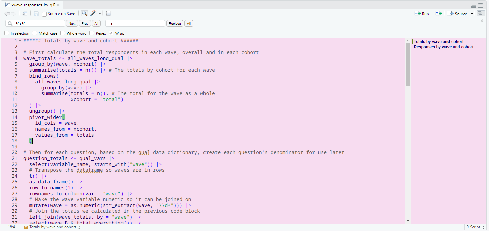
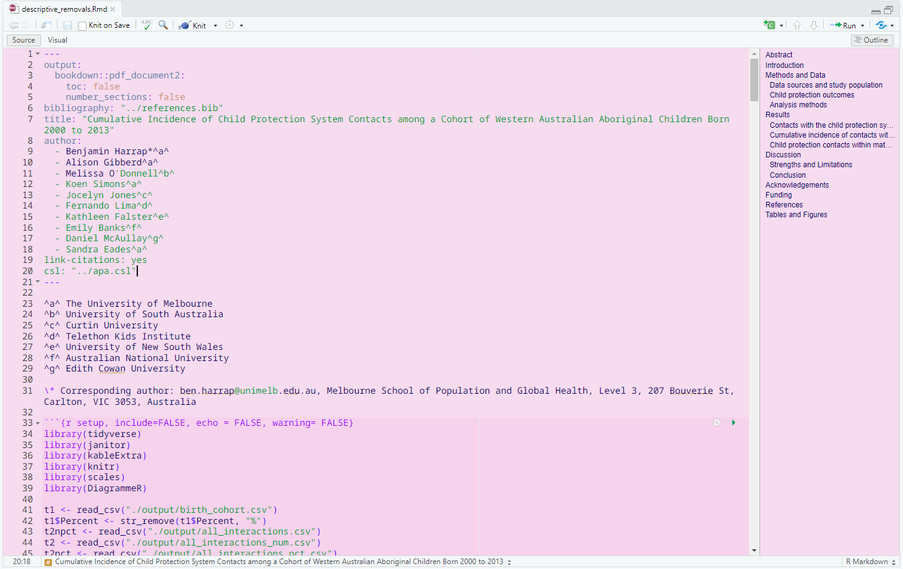

Today was going to be a productive day, I was going to get lots of work done, but then I had the thought “wouldn’t it be cool if I could make my own RStudio theme?” And now it’s 5pm and I definitely achieved something today but not what I set out to do. Making my own theme sure was fun though!
My noodle theme is available on github if you want to use it yourself. I’m solidly in my pastel pink era at the moment so I created the theme with that in mind. If you’re wondering why it’s called noodle, I was wearing a pastel pink t-shirt with a greyhound on it today (this one if you must know) and noodle is a silly nickname for greyhounds. Below are a couple of previews of what the theme looks like.


Most of today was a lot of trial and error, so I figured I’d collate what I learned into a blog post to hopefully save you some time. If you’re interested in making your own theme, read on!
Protip
While the following tips will help you get started, RStudio is rendered like a website, so you can right-click and click on inspect element to have a look at the thing you want to modify. Two useful ways to identify the thing you want to change are to look at the class it has - the element will usually begin something like <div class="ace_content">, so you’d search the rstheme file for that class. Alternatively, you could look for the colour which will usually be specified as a hex code (#f7dcf0) or as an rgb or rgba value rgba(0, 184, 25, 0.5).
Step 1 - copy an existing .rstheme file
There’s no point writing this all from scratch. We’re going to be good little scientists and Frankenstein our theme together.
To do this, find where RStudio is installed on your machine and navigate to the following directory .\RStudio\resources\app\resources\themes. You’ll see all the default .rstheme files - copy one of these to a location that’s not in the RStudio folder (on Windows it doesn’t like you editing files in this folder). Alternatively you can just download noodle.rstheme from my github and use that as your basis. The difference between my file and the default ones is I had a go at grouping the arguments into colours for not-text, colours for text, and other bits.
Once you’ve got a copy of an existing theme, open it in RStudio. Initially RStudio won’t know what the hell it is, so using the language drop-down in the corner of the source pane, update the language to CSS. This is useful because RStudio will preview what the colours in your file look like.
Step 2 - start testing out different colours
This is where the fun begins. There’s lots of different aspects to RStudio that you can control. I was using the guidance from Posit’s website, but there was a lot of back and forth and testing and being confused. I’ve embedded the webpage here so you can scroll through the list of selectors to see what Posit say about them.
It wouldn’t be css if it wasn’t confusing though, so I’ll step through some of the different options. I’ll go through changing the colours of not-text first, then is-text second. Delineating these things makes sense to me, you’ll see it in noodle.rstheme where I define css for the editor theme twice, once for the background colour and once for the default text colour.
Before you press on you’ll also want to have either a colour scheme handy or some kind of colour picking tool so you can get the hex codes.
Background colour
.ace_editor, .ace_editor_theme .profvis-flamegraph, .ace_editor_theme {
background-color: #F7DCF0
}This changes the background colour of RStudio’s panes, except for the terminal tab. It also doesn’t change the colour of the ‘gutter’, which is the part of the source pane where the line numbers appear.
Gutter colour
.ace_gutter {
background: #F7DCF0
}This will change the background colour of the ‘gutter’. I made it the same colour as the main part of the source pane but you can do whatever you like.
Terminal colour
.terminal {
background-color: #F7DCF0;
color: #000000;
}In the default rstheme files there’s a bunch of other options in the terminal argument. Don’t know what they do, and I don’t really use terminal much either, I just wanted it all to be consistently coloured. background-color changes the background and color changes the cursor colour.
Cursor colour
.ace_cursor {
color: #000000
}This changes the colour of the cursor (the little bar indicating where you’re typing).
Selection colour
.ace_marker-layer .ace_selection {
background: #82C28273
}This is one of my favourites. When you select code it’ll have this colour as the background. In the example it would highlight code in this colour!
Bracket highlights
.ace_bracket {
margin: 0 !important;
border: 0 !important;
background-color: rgba(0, 184, 25, 0.5);
}This is my other favourite! When your code has brackets, putting the cursor one of a pair of brackets will highlight them both so you can see where the bracketed code starts and end. Super useful when you’re working with bracketception. Some of the default themes weren’t obvious enough for me so I made it pretty clear with this green. Note in this instance I used rgba rather than a colour hex code - the last input (0.5 in this case) defines the transparency. You can define transparency with hex codes too but this works fine.
Code chunks
.ace_marker-layer .ace_foreign_line {
position: absolute;
z-index: -1;
background-color: #f6d1ed;
}This one sets the colour of code chunks.
Default text
.ace_editor, .ace_editor_theme .profvis-flamegraph, .ace_editor_theme {
color: #00006B
}This is the colour the majority of the text in your editor will be, basically any text that isn’t one of the special types defined later.
Gutter text
.ace_gutter {
color: #333
}Remember the gutter? Well this is how you define what colour the line numbers will be.
Keywords
.ace_keyword {
color: #9D00FF !important;
}Special words like if and function will be this colour
Metadata
.ace_meta,
.ace_support.ace_constant.ace_property-value {
color: #6585ae
}Text in document headers will be this colour, like titles, YAML and the like.
TRUE/FALSE and italics
.ace_constant.ace_language {
color: #D29380
}This sets the colour of the words TRUE and FALSE, plus any italicised text in markdown docs. You can specify a more general argument than this by just using .ace_constant on its own, but I like to be able to easily tell the difference between bolded and italicised text when I’m writing RMarkdown documents.
Numeric constants and bold text
.ace_constant.ace_numeric {
color: #FF8080
}This sets the colour of numeric constants, for example the 8 in mutate(x = 8) would be this colour. It’s also the color that bolded text in markdown documents will be.
Strings
.ace_string {
color: #009E18
}This sets the colour of strings.
Rainbow indent lines
.rstudio_rainbow_indent_guides .ace_line .ace_indent-guide:nth-child(2n+1){
background: linear-gradient(to left, #f38989 1px, transparent 1px, transparent);
}
.rstudio_rainbow_indent_guides .ace_line .ace_indent-guide:nth-child(2n+2){
background: linear-gradient(to left, #78c1a3 1px, transparent 1px, transparent);
}If you don’t know what indents are, you can find them by going through the menus Tools -> Global Options -> Code -> Display -> Indentation guidelines. You can have a bit of fun changing these. The two things you need to pay attention to are the colours (obviously) and the nth-child(2n+1) statements. I’m making an assumption here, but I think the number before n indicates how many colours there are in your set of rainbow indent colours, and the number following the + indicate the ordering of the colours. So in the above example, #f38989 comes first and #78c1a3 comes second and repeats for however many indents you have.
Rainbow indent fills
.rstudio_rainbow_indent_fills .ace_line .ace_indent-guide:nth-child(2n+1){
background: linear-gradient(to left, #f3898977 1px, #f3898977 1px, #f3898977);
}
.rstudio_rainbow_indent_fills .ace_line .ace_indent-guide:nth-child(2n+2){
background: linear-gradient(to left, #78c1a377 1px, #78c1a377 1px, #78c1a377);
}These are similar to the indent lines, except it fills the indents in blocks (vertically). The main difference here is the addition of two numbers at the end of the hex code, controlling the transparency. I’d suggest keeping the transparency, it looks weird with block colours!
Grey line indents
This the final thing I’ll mention, and I think the most interesting!
.ace_indent-guide {
background: url("data:image/png;base64,iVBORw0KGgoAAAANSUhEUgAAAAEAAAABCAYAAAAfFcSJAAAAAXNSR0IArs4c6QAAAARnQU1BAACxjwv8YQUAAAAJcEhZcwAADsMAAA7DAcdvqGQAAAANSURBVBhXY9jYWl4GAAW8AiRaxbuHAAAAAElFTkSuQmCC") right repeat-y
}It turns out that the grey line indents are actually tiny base64 images, so if you want to modify the colour to make them more visible you’ll need to create a new 1-pixel image. When I was creating my theme, the default colour of the theme I’d Frankensteined was too light to clearly see, so I ended up making a darker pixel for better contrast. I just made a 1-pixel image in paint and uploaded it to https://www.base64-image.de/ to get the base64 code used here.
Step 3 - add your theme to RStudio
There’s heaps more settings you can change, but hopefully the ones above are enough to get you going. Before you add your theme to RStudio there’s one final thing you’ll need to change! At the top of the file you’ll see two lines of code:
/* rs-theme-name: Noodle */
/* rs-theme-is-dark: FALSE */The first one is where you give it a name and the second is where you specify if you want RStudio’s broader theme to be light (FALSE) or dark (TRUE). Once you’ve changed this last bit, save the file. In order to add your theme to RStudio, navigate to the themes menu (Tools -> Global Options -> Appearance) and click the Add button. Navigate to wherever you’ve been keeping your .rstheme file and select it. It’ll appear in the list of themes, so just select it and click apply. Hey presto!
Step 4 - tinkering
If you’re anything like me you’ll spend several hours tinkering with colours to see what the options do and what your colour palette looks like together. Since you can’t edit the theme file while it’s loaded into RStudio, make the edits to the .rstheme file you created that wasn’t in the RStudio folder. When you’re ready to test your updates, head back to the Appearance menu, change the theme to something else, remove your theme by highlighting it and clicking the Remove button, then add it again.
There’s probably a smarter way of doing it but it worked for me. I hope you’ve found this useful! If I’ve made a mistake or misunderstood something in this blog post, be a good scientist and (kindly) let me know.
Comments
This sets the colour of comments (you better be writing comments!).